NetScaler SDX 12 / Citrix ADC SDX 12.1
Navigation
- Change Log
- Overview
- Lights Out Module (LOM)
- SDX IP Configuration
- SDX Software Bundle Upgrade
- FIPS
- DNS Servers
- Management Service NTP
- Licensing
- Management Service Alerting
- Management Service nsroot Password and AAA
- SSL Certificate and Encryption
- SDX/XenServer LACP Channels
- VPX Instances:
- Management Service Monitoring
- Management Service Backup
Change Log
- 2018 Dec 21 - updated screenshots for SDX 12.1
- 2018 Mar 20 - updated upgrade instructions for 12.0 build 57
- 2018 Mar 20 - in Provision VPX section, added Crypto Units info
Overview
Citrix CTX226732 Introduction to Citrix NetScaler SDX.
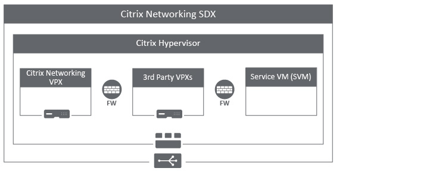
Citrix ADC SDX is normal Citrix ADC hardware, but runs XenServer hypervisor, and several virtual machines that are listed below:
- Service VM (aka Management Service, aka SVM) - every SDX comes with this Virtual Machine. This VM enables the SDX Administrator to create additional VMs on XenServer. It's analogous to vCenter, except each SDX has its own SVM.
- It's not possible to build this VM yourself. If it something happens to it, your only choice is to do a factory reset on the physical appliance, which deletes all local virtual machines, and recreates the Service VM.
- Each Service VM only manages the VMs on the local SDX. Each SDX has its own Service VM. To manage multiple SDXs, use Citrix Application Delivery Management (ADM).
- XenServer on SDX is a special build. Do not attempt to directly upgrade XenServer, patch XenServer, configure XenServer, etc. Instead, all upgrades and configurations should be performed by the Service VM.
- Citrix ADC VPX Instances - you create one or more Citrix ADC instances on top of XenServer.
- The number of Citrix ADC instances you can create is limited by your SDX license. Most models let you buy more instances.
- The physical resources (CPU, Memory, NICs, SSL Chips, FIPS HSM) of the SDX are partitioned to the different instances.
- The amount of bandwidth (throughput) available to the VPX instances depends on your license. For example, the 14040 SDX license gives you 40 Gbps of throughput, which is partitioned across the instances.
- The Citrix ADC instances are created from a normal XenServer .xva template.
- Each VPX has its own NSIP. Once the VPX is provisioned, you connect to the NSIP, and configure it like a normal Citrix ADC .
If the top left of the window says SDX, then you are logged into the Management Service (aka Service VM, aka SVM). If it says VPX, then you are logged into an instance.
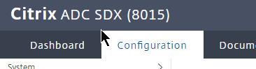
High Availability - Citrix ADC SDX does not have any High Availability capability at the XenServer or SVM layer. In other words, every SDX is completely standalone. To achieve HA, you create Citrix ADC VPX instances on two separate SDXs, and pair the VPX instances in the normal fashion. See Citrix ADC High Availability.
Why Citrix ADC VPX on top of SDX instead of normal hypervisors?
- VPX on SDX gets physical access to SSL chips. These SSL ASICs are not available on normal hypervisors. SSL Chips provide significantly higher SSL throughput than normal hypervisors.
- VPX on SDX gets SR-IOV access to the Network interfaces. This enables full 40 Gbps throughput to a single VM.
- The SDX NICs can filter VLANs to different instances, thus ensuring that VPX instances cannot cross security boundaries by adding the wrong VLANs.
- Some SDXs have Hardware Security Modules (HSM) for FIPS compliance. The VPXs on SDX can utilize this hardware security resource.
SDX Networking
- Management port - Every SDX has a 0/1 port.
- The SVM and XenServer management IP are on this NIC.
- You need a minimum of two IPs on a management network connected to the 0/1 port.
- SVM and XenServer cannot use any of the data ports for management.
- LOM port - Every SDX has a Lights Out Management (LOM) port.
- The LOM port gives you out-of-band console access to XenServer. Once you're on XenServer, you can use Xen commands to see the SVM console, and/or VPX consoles.
- Data ports - The remaining interfaces can be aggregated into port channels. Port channels are configured at XenServer, and not from inside the VPXs. Use the Service VM to create channels, and then connect the VPXs to the channels.
- VPX networking - When VPXs are created, you specify which physical ports to connect the virtual machine to.
- If you want the VPX NSIP to be on the same subnet as SVM and XenServer, then connect the VPX to 0/1.
- Connect the VPX to one or more LA/x interfaces (port channels).
- Once the VPX is created, log into it, and create VLAN objects in the normal fashion. VLAN tagging is handled by the VPX, not XenServer.
- On SVM, when creating the VPX instance, you can specify a list of allowed VLANs. The VPX administrator is only allowed to add VLANs that are in this list.
- SVM to NSIP - SVM must be able to communicate with every VPX NSIP. If VPX NSIP is on a different subnet than SVM, then ensure that routing/firewall allows this connection.
LOM IP Configuration
There are two ways to set the IP address of the Lights Out Module (LOM):
- ipmitool from the Citrix ADC SDX XenServer command line
- For MPX, you can run ipmitool from the BSD shell.
- Crossover Ethernet cable from a laptop with an IP address in the 192.168.1.0 network.
Ipmitool Method:
- For SDX, SSH to the XenServer IP address (not the Service VM IP).
- For MPX, SSH to the Citrix ADC NSIP.
- Default XenServer credentials are root/nsroot.
- Default MPX credentials are nsroot/nsroot.
- If MPX, run shell. XenServer is already in the shell.
-
Run the following:
ipmitool lan set 1 ipaddr x.x.x.x ipmitool lan set 1 netmask 255.255.255.0 ipmitool lan set 1 defgw ipaddr x.x.x.x 5. You should now be able to connect to the LOM using a browser.
5. You should now be able to connect to the LOM using a browser.
Laptop method:
- Configure a laptop with static IP address 192.168.1.10 and connect it to the Lights Out Module port.

- In a Web browser, type the IP address of the LOM port. For initial configuration, type the LOM port’s default address: http://192.168.1.3
- In the User Name and Password boxes, type the administrator credentials. The default username and password are nsroot/nsroot.
- In the Menu bar, click Configuration, and then click Network.

- Under Options, click Network, and type values for the following parameters:
- IP Address—The IP address of the LOM port.
- Subnet Mask—The mask used to define the subnet of the LOM port.
- Default Gateway—The IP address of the router that connects the appliance to the network.

- Click Save.
- Disconnect the laptop, and instead connect a cable from a switch to the Lights Out Module.
LOM Firmware Upgrade
The LOM firmware at https://www.citrix.com/downloads/netscaler-adc/components/lom-firmware-upgrade differs depending on the hardware platform. The LOM firmware for the 8000 series is different than the 11000 series and the 14000 series. Do not mix them up.
SDX 12.0 build 57 and newer automatically upgrade the LOM firmware when you upgrade the SDX firmware.
Citrix ADC MPX has a new method for updating LOM as detailed at CTX218264 How to Upgrade the LOM Firmware on Any NetScaler MPX Platform
For SDX firmware older than 12.0 build 57, update the LOM firmware separately:
- Determine which firmware level you are currently running. You can point your browser to the LOM and login to the see the firmware level. Or you can run ipmitool mc info from the XenServer shell.

- If your LOM firmware is older than 3.0.2, follow the instructions at http://support.citrix.com/article/CTX137970 to upgrade the firmware.
- If your LOM firmware is version 3.02 or later, follow the instructions at http://support.citrix.com/article/CTX140270 to upgrade the firmware. This procedure is shown below.
- Now that the firmware is version 3.0.2 or later, you can upgrade to 3.39. Click the Maintenance menu and then click Firmware Update.

- On the right, click Enter Update Mode.

- Click OK when prompted to enter update mode.

- Click Choose File, and browse to the extracted bin file.

- After the file is uploaded, click Upload Firmware.

- Click Start Upgrade.

- The Upgrade progress will be displayed.

- After upgrade is complete, click OK to acknowledge the 1 minute message.

- The LOM will reboot.
- After the reboot, login and notice that the LOM firmware is now 3.39.

SDX IP Configuration
Default IP for Management Service is 192.168.100.1/16 bound to interface 0/1. Use a laptop with crossover cable to reconfigure the IP. Point your browser to http://192.168.100.1. Default login is nsroot/nsroot.
Default IP for XenServer is 192.168.100.2/16. Default login is root/nsroot.
- There should be no need to connect to XenServer directly. Instead, all XenServer configuration (e.g. create new VM) is performed through the Management Service (SVM).
- When you set the SVM's IP Address, there is also a field to also set the XenServer IP address. XenServer IP and Management Service IP must be on the same subnet.
To change the XenServer IP, make the change through the SVM as detailed below:
- Point a browser to http://192.168.100.1, and login as nsroot/nsroot.
- When you first login to the SDX Management Service, the Welcome! Wizard appears. Click the first row for Management Network.
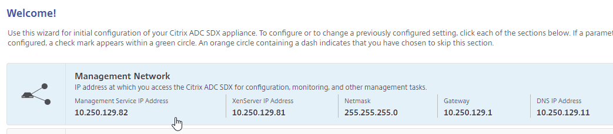
- Configure the IP addresses.
- Appliance Management IP = SVM (Management Service). This is the IP you'll normally use to manage SDX.
- Application supportability IP = XenServer. You'll almost never connect to this IP.
- The bottom has an Additional DNS checkbox that lets you enter more DNS servers.
- You can change the nsroot password at this time, or change it later after LDAP is configured.
- Click Done.
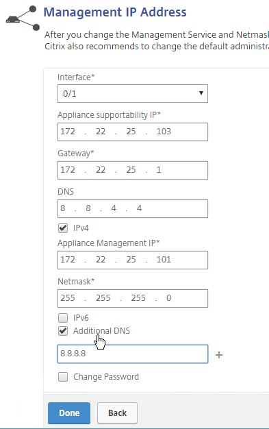
- Click the System Settings box.
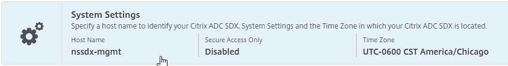
- Enter a Host Name.
- Select the time zone, and click Continue.

- Click the Licenses box.
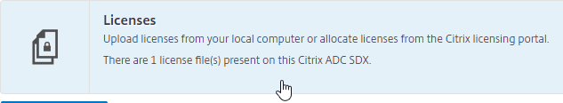
- Click Add License File.
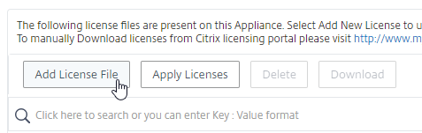
- Allocate Citrix ADC SDX licenses normally.
- The SDX license defines the number of instances you can create.
- It also defines the amount of throughput available to the instances.
- The SDX license is allocated to ANY, which means you can use the same license on all SDX hardware, assuming all of them are purchased with the same license model.
- Click Browse to upload the license file. After uploading, click Finish and it should apply automatically.
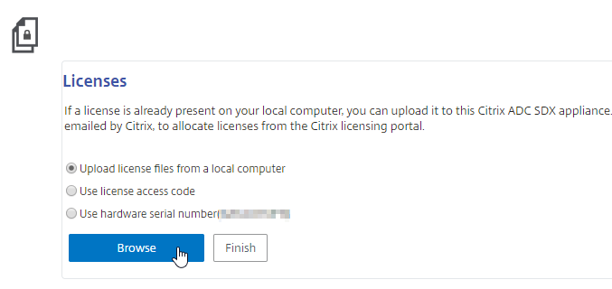
- Or you can click Apply Licenses.
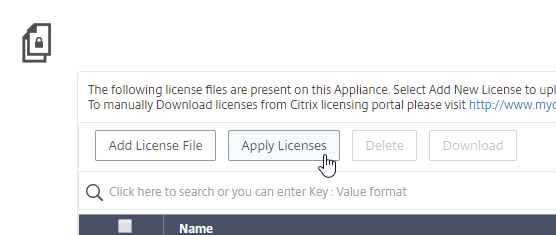
- Then click Continue.
Another way to change the Management Service IP address is through the serial port. This is actually the XenServer Dom0 console. Once logged in to XenServer, run ssh 169.254.0.10 to access the Management Service virtual machine. Then follow instructions at http://support.citrix.com/article/CTX130496 to change the IP.
The console of the Management Service virtual machine can be reached by running the following command in the XenServer Dom0 shell (SSH or console):
xe vm-list params=name-label,dom-id name-label="Management Service VM"
Then run /usr/lib64/xen/bin/xenconsole <dom-id>
SDX Platform Software Bundle
If your Citrix ADC SDX is not version 11 or newer, and if your Citrix ADC SDX is running 10.5 build 57 or later, then do the following:
- Go to Management Service > Software Images, and upload the Single Bundle for 12.0 or 12.1. The single bundle is around 1.5 GB.
- On the left, click System.
- On the right, click Upgrade Management Service. Select the Single Bundle upgrade file you already uploaded.
- Management Service will upgrade and reboot. A few minutes after that, XenServer will be upgraded. Be patient as there's no notification that the box will reboot again.
Starting with SDX 11.0, all updates are bundled together and installed at once.
- Make sure your Management Service (SVM) is running SDX 10.5 build 57 or newer.
- Download the latest SDX Platform Software bundle from Downloads > Citrix ADC > Release 12.1 (or 12.0) > Service Delivery Appliances.
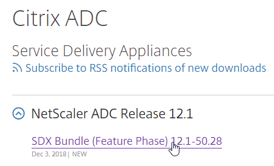
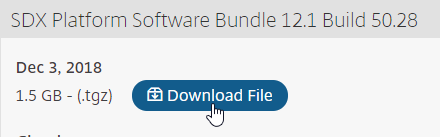
- Login to the SDX Management Service, and go to Configuration > System.
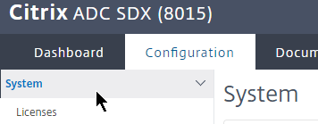
- On the right, in the right column, click Upgrade Appliance.

- Browse to the build-sdx-12.1.tgz software bundle, and click OK.
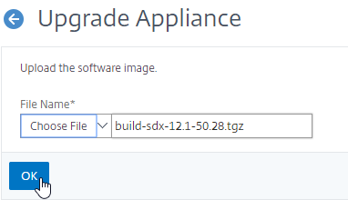
- It should show you the estimated installation time.
- Check boxes next to the instances that need configs saved.
- Click Upgrade.
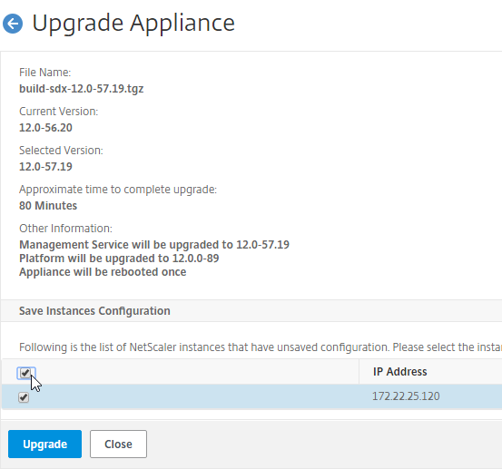
- Click Yes to continue with the upgrade.

- The Management Service displays installation progress. It will take a while.
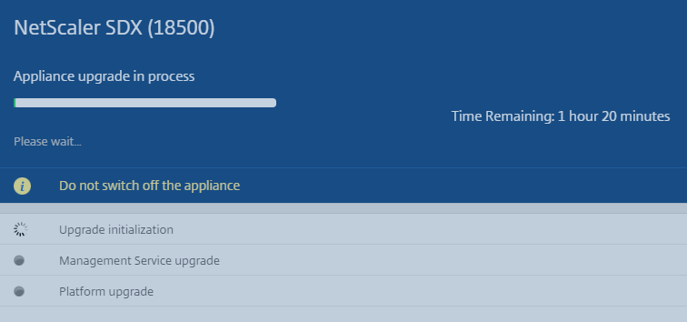
- Once the upgrade is complete, click Login.


- If you click the Configuration tab, the Information page will be displayed showing the version of XenServer, Management Service (Build), etc.
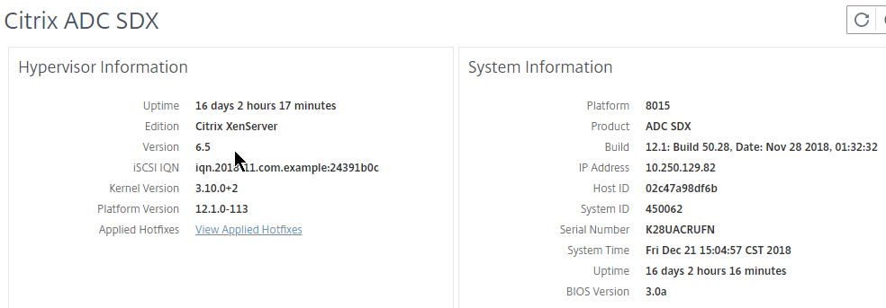
FIPS
If your SDX is a FIPS appliance, see Citrix Blog Post Meet Security Compliance and Be Scalable with NetScaler FIPS SDX for detailed HSM setup instructions:
- Zeroize the HSM
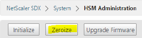
- Upgrade HSM firmware
- Create HSM partitions
- Create Citrix ADC instance and attach HSM partition:
- Only one CPU core
- From inside Citrix ADC instance:
- Reset FIPS
- Initialize FIPS
- Create FIPS Key
- Create HA Pair and synchronize FIPS
DNS Servers
Older versions of SDX only let you enter one DNS server. To add more, do the following:
- In the Management Service, on the left, click System.
- On the right, click Network Configuration.
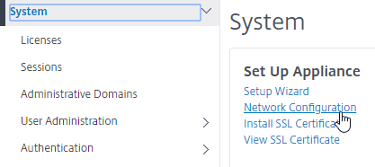
- On the bottom, there's a checkbox for Additional DNS that lets you put in more DNS servers.
- Click OK when done.
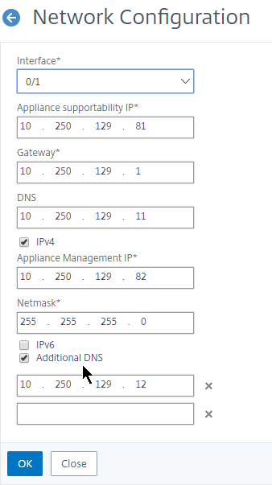
Management Service NTP
- On the Configuration tab, in the navigation pane, expand System, and then click NTP Servers.
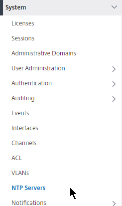
- To add a new NTP server, in the right pane, click Add.
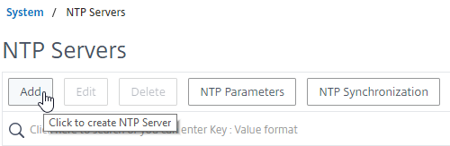
- In the Create NTP Server dialog box, enter the NTP server name (e.g. pool.ntp.org), and click Create.
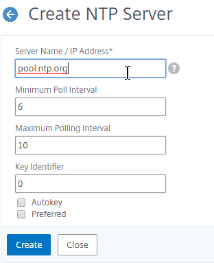
- Click Yes when prompted to restart NTP Synchronization.
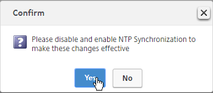
- In the right pane, click NTP Synchronization.
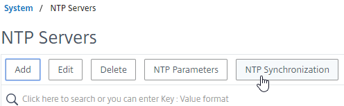
- In the NTP Synchronization dialog box, select Enable NTP Sync. Click OK.
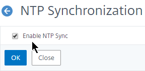
- Click Yes when asked to restart the Management Service. This only restarts the SVM. Other instances on the same box won't be affected.
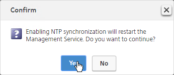
Licensing
If you haven't already licensed your SDX, you can upload a license file to the SDX appliance.
- Login to http://mycitrix.com and go to Manage Licenses.
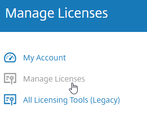
- In the New Licenses section, find a Citrix ADC SDX license, and allocate it. There is no need to specify a hostname. You can use the same license file on multiple SDX appliances.
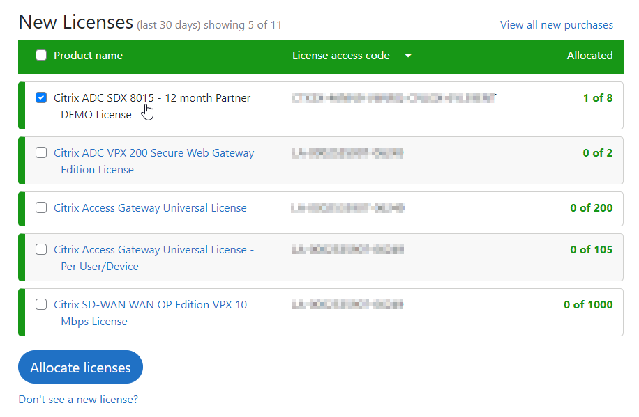
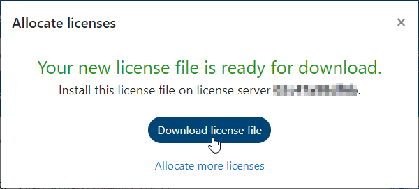
- On the SDX Configuration tab, in the navigation pane, expand System, and then click Licenses.
- In the right pane, click Add License File.
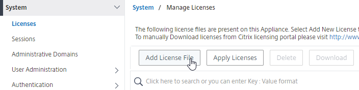
- Click Browse and upload the allocated license file.
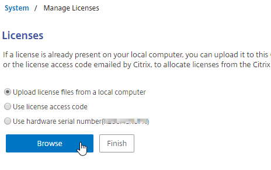
- Click Finish.
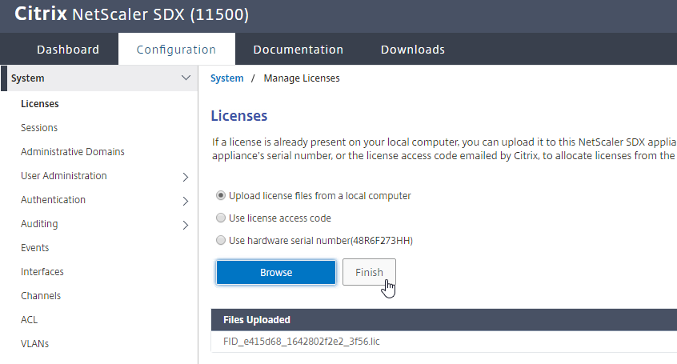
- If you refresh your browser, the number shown on the top left of the window will indicate your licensed model number.
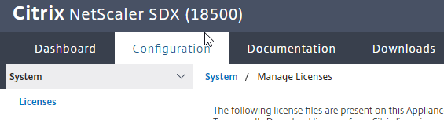
Management Service Alerting
Syslog
- On the Configuration tab, expand System > Auditing, and click Syslog Servers.
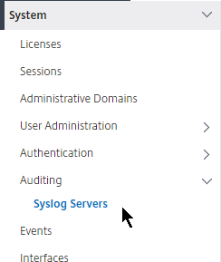
- In the right pane, click the Add button.
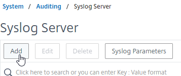
- Enter a name for the Syslog server.
- Enter the IP address of the Syslog server.
- Change the Choose Log Level section to Custom, and select log levels.
- Click Create.
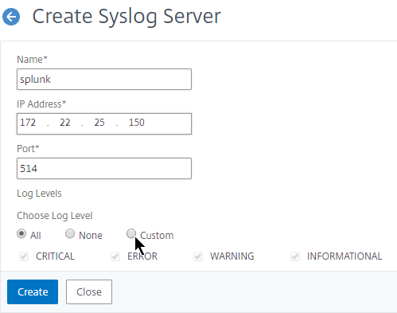
- On the right is Syslog Parameters.
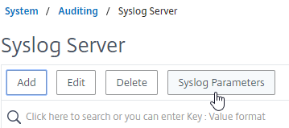
- You can configure the Date Format and Time Zone. Click OK.
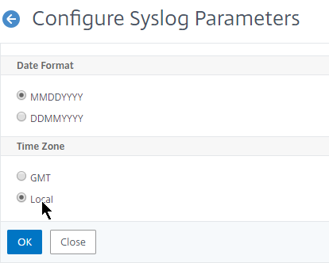
Mail Notification
- On the Configuration tab, expand System > Notifications, and click Email.
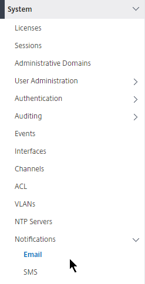
- In the right pane, on the Email Servers tab, click Add.
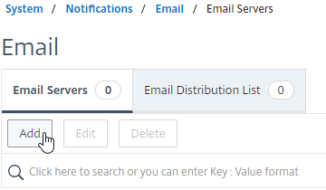
- Enter the DNS name of the mail server, and click Create.
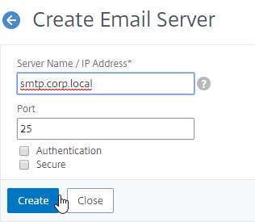
- In the right pane, switch to the tab named Email Distribution List, and click Add.
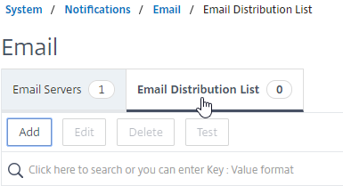
- In the Create Email Distribution List page:
- Enter a name for the mail profile.
- Select the Email Server to use.
- Enter the destination email address (distribution list).
- Click Create.
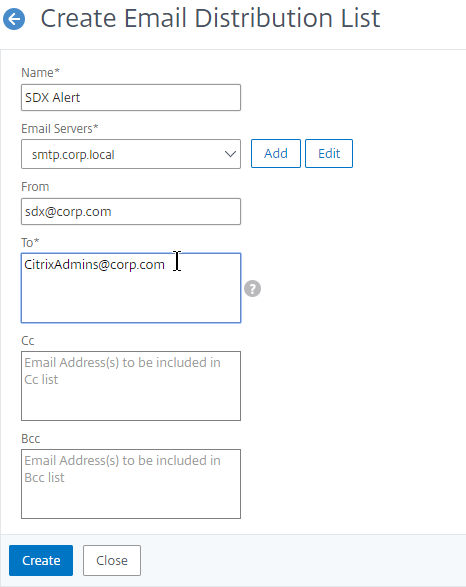
- SDX 12.1 and newer has a Test button for the Distribution List.
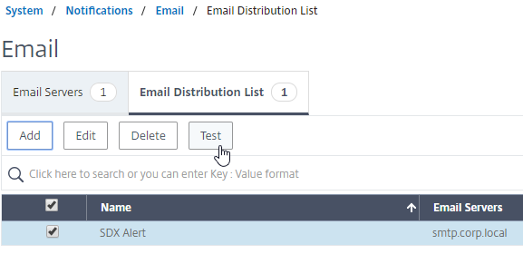
System SNMP
- Go to System > SNMP.
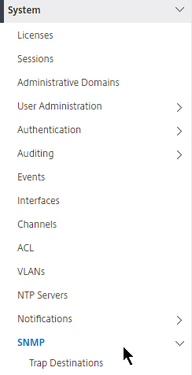
- On the right, click Configure SNMP MIB.
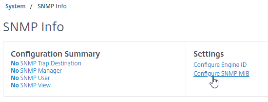
- Enter asset information, and click OK. Your SNMP management software will read this information.
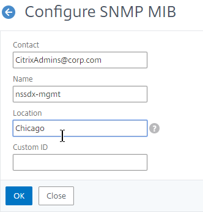
- Under the SNMP node, configure normal SNMP including: Trap Destinations, Managers, Alarms, etc.
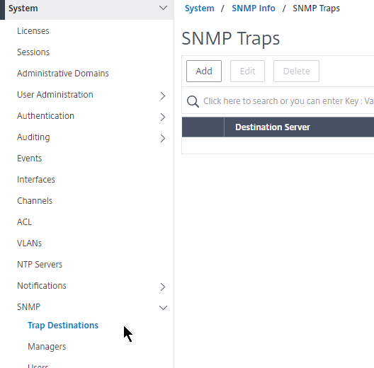
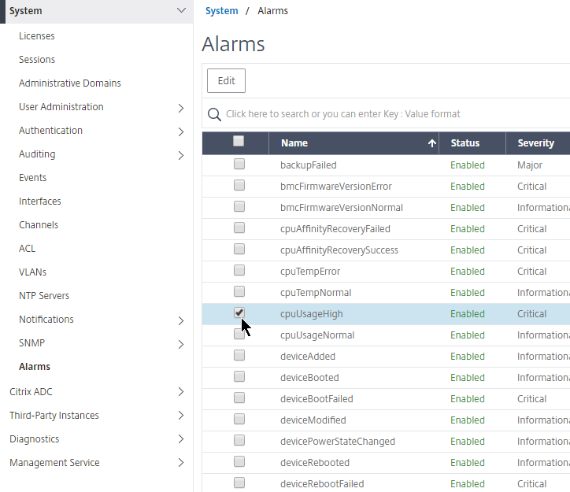
- MIBs can be downloaded from the Downloads tab.
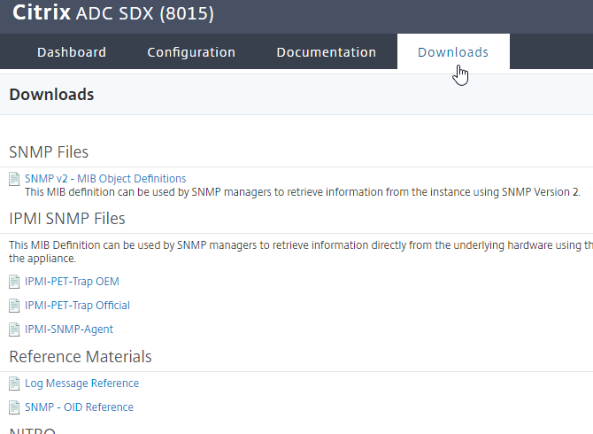
Instance SNMP
- The instances will send SNMP traps to the Service VM. To get alerted for these traps, in the Configuration page, in the navigation pane, expand Citrix ADC (or NetScaler), expand Events, and click Event Rules.
- On the right, click Add.
- Give the rule a name.
- Move the Major and Critical severities to the right.
- Scroll down.
- For the other sections, if you don’t configure anything then you will receive alerts for all of the devices, categories, and failure objects. If you configure any of them, then only the configured entities will be alerted.
- Scroll down.

- Click Save.
- Select an Email Distribution List, and click Done.
Management Service nsroot Password and AAA
Change nsroot password
- On the Configuration tab, in the navigation pane, expand System, expand User Administration, and then click Users.
- On the right, in the Users pane, right-click the nsroot user account, and then click Edit.
- In the Configure System User dialog box, check the box next to Change Password.
- In Password and Confirm Password, enter the password of your choice.
- Scroll down and click OK.
AAA Authentication
To enable LDAP authentication for the Service VM:
- Go to Configuration > System > Authentication > LDAP.
- In the right pane, click Add.
- This is configured identically to Citrix ADC.
- Enter a Load Balancing VIP for LDAP servers.
- Change the Security Type to SSL, and Port to 636.
- Scroll down.
- Note: if you want to Validate LDAP Certificate, then there are special instructions for installing the root certificate on the SVM. See Installing CA certificates to the SDX/SVM for LDAPS user authentication at Citrix Discussions for details.
- Enter the Base DN in LDAP format.
- Enter the bind account in UPN format, or Domain\Username format, or DN format.
- Check the box for Enable Change Password.
- Click Retrieve Attributes, and scroll down.

- For Server Logon Attribute, select sAMAccountName.
- For Group Attribute, select memberOf.
- For Sub Attribute Name, select CN.
- To prevent unauthorized users from logging in, configure a Search Filter as detailed in the LDAP post. Scroll down.

- Click Create.
- Expand System, expand User Administration, and click Groups.
- On the right, click Add.
- In the Create System Group page:
- Enter the case sensitive name of the Active Directory group.
- Check the box next to System Access.
- Configure the Session Timeout.
- Click Create.
- On the left, under System, click User Administration.
- On the right, click User Lockout Configuration.
- If desired, check the box next to Enable User Lockout, and configure the maximum logon attempts. Click OK.
- On the left, under System, click Authentication.
- On the right, click Authentication Configuration.
- Change the Server Type drop-down to EXTERNAL, and click Insert.
- Select the LDAP server you created earlier, and click OK.
- Make sure Enable fallback is enabled, and click OK.
SSL Certificate and Encryption
Replace SDX Management Service Certificate
To replace the Management Service certificate:
- PEM format: The certificate must be in PEM format. The Management Service does not provide any mechanism for converting a PFX file to PEM. You can convert from PFX to PEM by using the Import PKCS#12 task in a Citrix ADC instance.
- On the left, click System.
- On the right, in the left column, in the Set Up Appliance section, click Install SSL Certificate.
- Select the certificate and key files in PEM format. If the key file is encrypted, enter the password. Then click OK.
- The Management Service will restart. Only the SVM restarts; the Citrix ADC instances do not restart.

Force HTTPS to the Management Service
- Connect to the SVM using HTTPS. You can’t make this upcoming change if you are connected using HTTP.
- On the Configuration tab, click System.
- On the right, click Change System Settings.
- Check the box next to Secure Access Only, and click OK. This forces you to use HTTPS to connect to the Management Service.
SSL Encrypt Management Service to Citrix ADC Communication
From http://support.citrix.com/article/CTX134973: Communication from the Management Service to the Citrix ADC VPX instances is HTTP by default. If you want to configure HTTPS access for the Citrix ADC VPX instances, then you have to secure the network traffic between the Management Service and Citrix ADC VPX instances. If you do not secure the network traffic from the Management Service configuration, then the Citrix ADC VPX Instance State appears as Out of Service and the Status shows Inventory from instance failed.
- Log on to the Management Service .
- On the Configuration tab, click System.
- On the right, click Change System Settings.
- Change the Communication with NetScaler Instance drop-down to https, as shown in the following screen shot:
-
Run the following command on the Citrix ADC VPX instance, to change the Management Access (-gui) to SECUREONLY:
-
Or in the Citrix ADC instance management GUI, go to Network > IPs, edit the NSIP, and then check the box next to Secure access only.
SDX/XenServer LACP Channels
For an overview of Citrix ADC SDX networking, see Citrix CTX226732 Introduction to Citrix NetScaler SDX 
To use LACP, configure Channels in the Management Service, which creates them in XenServer. Then when provisioning an instance, connect it to the Channel.
- In the Management Service, on the Configuration tab, expand System, and click Channels.
- On the right, click Add.
- In the Create Channel page:
- Select a Channel ID.
- For Type, select LACP or STATIC. The other two options are for switch independent load balancing.
- In the Interfaces section, move the Channel Member interfaces to the right by clicking the right arrow.
- In the Settings section, for LACP you can select Long or Short, depending on switch configuration. Long is the default.
- Click Create when done.
- Click Yes when asked to proceed.

- The channel will then be created on XenServer.
VPX Instances – Provision
Admin profile
Admin profiles specify the nsroot user credentials for the instances. Management Service uses these nsroot credentials later when communicating with the instances to retrieve configuration data.
The default admin profile for an instance specifies a user name of nsroot, and the password is also nsroot. To specify a different nsroot password, create a new admin profile.
- You can create a single admin profile that is used by all instances. To delegate administration, don't give out the nsroot password to the instance administrators. One option is to enable LDAP inside the instance before granting access to a different department.
- When creating an instance, there's an option to create a non-nsroot account, which has almost the same permissions as nsroot, but leaves out some SDX specific features (e.g interfaces). This is another option for delegating administration to a different team.
- Or you can create different admin profiles for different instances, which allows you to inform the different departments the nsroot password for their VPX instances.
Important: Do not change the password directly on the Citrix ADC VPX instance. If you do so, the instance becomes unreachable from the Management Service. To change a password, first create a new admin profile, and then modify the Citrix ADC instance, selecting this profile from the Admin Profile list.
- On the Configuration tab, in the navigation pane, expand Citrix ADC (or NetScaler), and then click Admin Profiles.
- In the Admin Profiles pane, click Add.
- In the Create Admin Profile dialog box, set the following parameters:
- Profile Name*—Name of the admin profile.
- User Name—User name used to log on to the Citrix ADC instances. The user name of the default profile is nsroot and cannot be changed.
- Password*—The password used to log on to the Citrix ADC instance. Maximum length: 31 characters.
- Confirm Password*—The password used to log on to the Citrix ADC instance.
- Use global settings for NetScaler communication - you can uncheck this box and change the protocol to https.
- Click Create. The admin profile you created appears in the Admin Profiles pane.
Upload a Citrix ADC VPX .xva file
You must upload a Citrix ADC VPX .xva file to the SDX appliance before provisioning the Citrix ADC VPX instances. XVA files are only used when creating a new instance. Once the instance is created, use normal firmware upgrade procedures.
- Go to the Citrix ADC VPX download page.
- Download the Citrix ADC VPX for XenServer.
- After downloading, extract the .gz file (use 7-zip). You can't upload the .gz file to SVM. You must extract it first.
- On the Configuration tab, in the navigation pane, expand Citrix ADC (or NetScaler), and then click Software Images.
- On the right, switch to the XVA Files tab, and then click Upload.
- In the Upload NetScaler Instance XVA dialog box, click Browse, and select the XVA image file that you want to upload. Click Upload.
- The XVA image file appears in the XVA Files pane after it is uploaded.
Provision a Citrix ADC instance
- On the SDX Management Service, go to the Dashboard page.
- On the bottom right, the System Resource Utilization pane shows you the amount of physical resources that are available for allocation.
- Click Core Allocation to see the number of cores available for assignment.
- In 12.0 build 57 and newer, click Crypto Capacity to see SSL capacity.
- On the Configuration tab, in the navigation pane, expand Citrix ADC (or NetScaler), and then click Instances.
- In the NetScaler Instances pane, click Add.
- In the Provision NetScaler section, enter a name for the instance.
- Enter the NSIP, mask, and Gateway.
- Nexthop to Management Service - If the instance's NSIP is on a different subnet than the SVM IP, and if the instance's default gateway is on a different network than the NSIP, then enter a next hop router address on the instance's NSIP network, so the instance can respond to the SDX Management Service.
- In the XVA File field, you can Browse > Local to select an XVA file on your local machine that hasn't been uploaded to SDX yet. Or you can Browse > Appliance, and select an XVA file that has already been uploaded to SDX.
- Select an Admin Profile created earlier. Or you can click the Add button or plus icon to create a new Admin Profile.
- Enter a Description. Scroll down.
- In the License Allocation section, change the Feature License to Platinum.
- For Throughput, partition your licensed bandwidth. If you are licensed for 40 Gbps, make sure the total of all VPX instances does not exceed that number.
- For Allocation Mode, Burstable is also an option. Fixed bandwidth can’t be shared with other instances. Burstable can be shared. See Bandwidth Metering in NetScaler SDX at Citrix Docs.
- If SDX 12.0 build 57 or newer, in the Crypto Allocation field, allocate at least one multiple of Asymmetric Crypto Units. Clicking the up arrow should increment in the correct multiple. See Managing Crypto Capacity at Citrix Docs. You can find the minimum by dividing the total Asymmetric Crypto Units by the Crypto Virtual Interfaces. Enter in a multiple of this result.
- On newer Citrix ADC hardware (e.g SDX 8900), you can also specif the Symmetric Crypto Units. Again, enter a multiple of the minimum.
- Citrix ADC SDX older than build 57 will instead ask for SSL Chips. Some SSL/TLS features require at least one chip.
- In the Resource Allocation section, consider changing the Total Memory to 4096.
- For CPU, for production instances, select one of the Dedicated options. Dev/Test instances can use Shared CPU. Then scroll down.
- In the Instance Administration section, you can optionally add an instance administrator. Enter a new local account that will be created on the VPX. This instance admin is in addition to the nsroot user. Note, networking functionality is not available to this account. Scroll down.


- In the Network Settings section, if the VPX NSIP is on the same network as the SDX SVM, then leave 0/1 selected, and deselect 0/2.
- Click Add to connect the VPX to more interfaces.
- If you have Port Channels, select one of the LA interfaces.
- If you configure any VLAN settings here, then XenServer filters the VLANs available to the VPX instance. Changing the VLAN filtering settings later probably requires a reboot. Click Add. Note: VLAN tagging is configured inside the instance, and not here.
- In the Management VLAN Settings section, do not configure anything in this section unless you need to tag the NSIP VLAN.
- Click Done.
- After a couple minutes the instance will be created. Look in the bottom right of Chrome to see the status.
- Click Close when it's done booting.
- If you go to the Dashboard page...
- If you click an instance name, you can see how the instance is connected to the physical NICs.
- Back in Configuration > Citrix ADC > Instances, in your Instances list, click the blue IP address link to launch the VPX management console. Or, simply point your browser to the NSIP and login.
- Do the following at a minimum (instructions are in the NetScaler System Configuration article):
- Create Policy Based Route for the NSIP – System > Settings > Network > PBRs
- Add SNIPs for each VLAN – System > Network > IPs
- Add VLANs and bind to SNIPs – System > Network > VLANs
- Create Static Routes for internal networks - System > Network > Routes
- Change default gateway – System > Network > Routes > 0.0.0.0
- Create another instance on a different SDX, and High Availability pair them together – System > High Availability
VPX Instances – Manage
You may login to the VPX instance and configure everything normally. SDX also offers the ability to manage IP addresses, and SSL certificates, from SDX, rather than from inside the VPX instance. The SDX Management Service does not have the ability to create certificates, so it’s probably best to do that from within the VPX instance.
View the console of a Citrix ADC instance
- Connect to the SDX Management Service using https.
- Viewing the virtual machine console might not work unless you install a valid certificate for the SDX Management Service.
- In the Management Service, go to Configuration > Citrix ADC > Instances.
- On the right, right-click an instance, and click Console.
- The instance console then appears.
- Another option is to use the Lights Out Module, and the xl console command, as detailed at Citrix Blog Post SDX Remote Console Access of VIs.
Start, stop, delete, or restart a Citrix ADC instance
- On the Configuration tab, in the navigation pane, expand Citrix ADC (or NetScaler), and click Instances.
- On the right, in the Instances pane, right-click the Citrix ADC instance on which you want to perform the operation, and then click Start or Shut Down or Delete or Reboot.
- In the Confirm message box, click Yes.
Create a Subnet IP Address on a Citrix ADC Instance
- On the Configuration tab, in the navigation pane, click Citrix ADC.
- On the right, in the Citrix ADC Configuration pane, click Create IP.
- In the Create Citrix ADC IP dialog box, specify values for the following parameters.
- IP Address* - Specify the IP address assigned as the SNIP address.
- Netmask* - Specify the subnet mask associated with the SNIP address.
- Type* - Specify the type of IP address. Possible values: SNIP.
- Save Configuration* - Specify whether the configuration should be saved on the Citrix ADC . Default value is false.
- Instance IP Address* - Specify the IP address of the Citrix ADC instance on which this SNIP will be created.
- Click Create.
Create a VLAN on a Citrix ADC instance
- Go to Citrix ADC > Instances.
- On the right, right-click an instance, and click VLAN Bindings.
- Click Add.
- Enter a VLAN ID, and select an interface.
- Check the box for Tagged if needed.
- Notice there’s no way to bind a SNIP to the VLAN. You do that inside the instance. Click Create.
Save the configuration of a Citrix ADC instance
- On the Configuration tab, in the navigation pane, click Citrix ADC.
- On the right, in the Citrix ADC pane, click Save Configuration.
- In the Save Configuration dialog box, in Instance IP Address, select the IP addresses of the Citrix ADC instances whose configuration you want to save.
- Click OK.
Change NSIP of VPX Instance
The best way to change the NSIP is to edit the instance. Go to Configuration > Citrix ADC > Instances, right-click an instance, and click Edit.
Then change the IPv4 Address at the top of the page. Click Done. SVM will push the configuration change to the instance.
If you change NSIP inside of VPX instead of Editing the Instance in the Management Service, see article CTX139206 How to Change NSIP of VPX Instance in SDX to adjust the XenServer settings.
Enable Call Home
- On the Configuration tab, in the navigation pane, click the Citrix ADC node.
- On the right, click Call Home.
- Enter an email address to receive communications regarding Citrix ADC Call Home.
- Check the box next to Enable Call Home.
- Click Add.
- Select the instances to enable Call Home by moving them to the right, and click OK.
- You can view the status of Call Home by expanding Citrix ADC, and clicking Call Home.
- The right pane indicates if it’s enabled or not. You can also configure Call Home from here.
VPX Instance – Firmware Upgrade
Upload Citrix ADC Firmware Build Files
To upgrade a VPX instance from the Management Service, first upload the firmware build file.
- Download the Citrix ADC firmware using the normal method. It's in the Build section.
- On the SDX, in the Configuration tab, on the left, expand Citrix ADC (or NetScaler), and click Software Images.
- On the right, in the Software Images tab, click Upload.
- Browse to the build…tgz file, and click Open.
Upgrade Multiple NetScaler VPX Instances
You can upgrade multiple instances at the same time:
- To prevent any loss of the configuration running on the instance that you want to upgrade, save the configuration on the instance before you upgrade the instance.
- On the Configuration tab, in the navigation pane, expand Citrix ADC (or NetScaler), and click Instances.
- Right-click an instance, and click Upgrade.
- In the Upgrade Citrix ADC Instance dialog box, in Build File, select the Citrix ADC upgrade build file of the version you want to upgrade to. Click OK.
- Click Close when done.
Management Service Monitoring
- To view syslog, in the navigation pane, expand System, click Auditing, and then click Syslog Message in the right pane.
- To view the task log, in the navigation pane, expand Diagnostics, and then click Task Log.
- To view Management Service events, on the Configuration tab, in the expand System and click Events.
- Citrix ADC > Entities lets you see the various Load Balancing entities configured on the instances. You might have to click Poll Now to get them to show up.
- To view instance alerts, go to Citrix ADC > Events > All Events.
- There is also event reporting.
Management Service Backups
The SDX appliance automatically keeps three backups of the Management Service configuration that are taken daily at 12:30 am.
Backups in NetScaler SDX contain the following:
- Single bundle image
- NetScaler XVA image
- NetScaler upgrade image
- Management Service image
- Management Service configuration
- NetScaler SDX configuration
- NetScaler configuration
You can go to Management Service > Backup Files to backup or restore the SDX appliance’s configuration. And you can download the backup files.
You can configure the number of retained backups by clicking System on the left, and then clicking Backup Policy in the right pane.
You can even transfer the backup files to an external system.